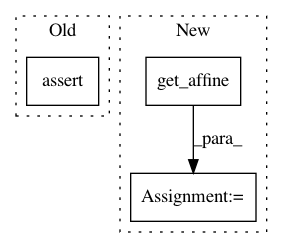

79b6ee5f00c178679aa0fe43ba45dfabf1c51ccc,dipy/io/tests/test_trackvis.py,,test_get_affine,#,94
Before Change
hdr["origin"] = [1,2,3]
exp_aff = np.eye(4)
exp_aff[:3,3] = [1,2,3]
yield assert_array_equal(tv.get_affine(hdr, "DPCS"),
exp_aff)
After Change
d = {"voxel_size": np.array([1,2,3]),
"image_orientation_patient": np.array([1,0,0,0,1,0]),
"origin": np.array([10,11,12])}
aff = tv.get_affine(d)
@parametric
def test_set_affine():
In pattern: SUPERPATTERN
Frequency: 3
Non-data size: 3
Instances
Project Name: nipy/dipy
Commit Name: 79b6ee5f00c178679aa0fe43ba45dfabf1c51ccc
Time: 2010-03-19
Author: matthew.brett@gmail.com
File Name: dipy/io/tests/test_trackvis.py
Class Name:
Method Name: test_get_affine
Project Name: nilearn/nilearn
Commit Name: 38ac604b6a980b6abf549014f65929cf4c0ed319
Time: 2014-06-17
Author: gael.varoquaux@normalesup.org
File Name: nilearn/plotting/img_plotting.py
Class Name:
Method Name: demo_plot_img
Project Name: nipy/dipy
Commit Name: b125873cb6e0fa9f99137b256ac5fc602e4b72f1
Time: 2014-01-17
Author: Samuel.St-Jean@usherbrooke.ca
File Name: dipy/denoise/tests/test_nlmeans.py
Class Name:
Method Name: test_nlmeans